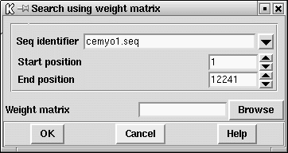

This option is used to search for motifs such as binding sites. The
motifs are defined using weight matrices which are stored as files
that need to be created beforehand. These matrices are usually
calculated from alignments of trusted examples of the motif. The
make_weights program can be used to create weight matrices from
sets of aligned sequences
(see section Make_weights)
We also plan to build up a library of matrix files which we will place
in our ftp site.
An example weight matrix file is shown below. It consists of a title record; a record defining the motif size, an offset and the score range; 2 records which need to be present but which are ignored; 4 records defining the base frequencies calculated from the trusted examples.
An example weight matrix file is shown below. The first line gives the title ('Mount acceptors' in this example). The next line gives the motif length (18), the "mark position" (15), and the minimum and maximum scores (0.0 and 10.0). The "mark position" is an offset which is added to the position of any matches reported by the search routine in spin. The next two lines are ignored by the programs. The first of them gives the matrix column positions, and the next gives the total counts in each column. The final lines (4 for DNA weight matrices) give the counts for each character type at each position in the motif. These counts are converted into weights that are used during the searches. Any position in a sequence which scores at least as high as the minimum score is reported as a match, and if the results are plotted they are scaled to fit the range defined by the minimum and maximum scores.
Mount acceptors
18 15 0.0 10.0
P -14 -13 -12 -11 -10 -9 -8 -7 -6 -5 -4 -3 -2 -1 0 1 2 3
N 113 113 113 113 113 113 113 113 113 113 113 113 113 113 113 113 113 113
T 58 50 57 59 67 56 58 49 47 66 64 31 34 0 0 11 41 31
C 21 28 34 25 29 33 35 32 42 40 33 25 74 0 0 23 28 41
A 17 11 11 18 7 17 12 23 15 3 10 29 5 113 0 24 21 21
G 17 24 11 11 10 7 8 9 9 4 6 28 0 0 113 55 23 20
Search results are plotted as log-odds and appear as shown below.
The dialogue for the option is shown below.

![[picture]](spin_weight_matrix,6in.png.html)
(Click for full size image)
Last generated on 25 April 2016.